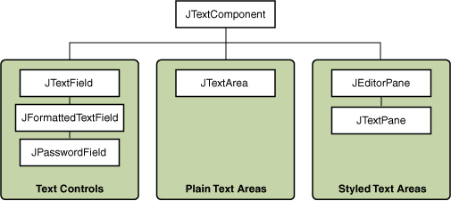

Lección: Usando Componentes Swing
Usando Componentes de Texto
Esta sección ofrece información básica que podría necesitar cuando usa componentes Swing de texto. Si tiene la intención de usar un componente de texto sin estilos ─ un campo de texto, campo de contraseña, campo de texto formateado, o área de texto ─ vaya a su página cómo y vuelva aquí sólo si es necesario. Si tiene la intención de usar un componente de texto estilizado, vea Cómo Usar Paneles de Edición y Paneles de Texto, y lea ésta sección también. Si no sabe qué componente necesita, continúe leyendo.
Los componentes de texto de Swing visualizan texto y opcionalmente permiten al usuario editar el texto. Los programas necesitan componentes de texto para tareas que van desde lo sencillo (ingrese una palabra y pulse Intro) hasta el complejo (despliegue y edite texto con imágenes incrustadas en un idioma asiático).
Swing ofrece seis componentes de texto, junto con clases de soporte e interfaces que cumplen incluso los
requisitos de texto más complejos. A pesar de sus diferentes usos y capacidades, todos los componentes de texto
de Swing heredan de la misma superclase,
JTextComponent, que proporciona una base altamente configurable y potente para la
manipulación de texto.
La siguiente figura muestra la jerarquía de JTextComponent.

La siguiente figura muestra una aplicación llamada TextSamplerDemo que usa cada componente de texto
de Swing.

Pruebe esto:
-
Pulse el botón Lanzar para ejecutar TextSamplerDemo usando
Java™ Web Start (
descargue el EDD 7 o
posterior). Alternativamente, para compilar y ejecutar el ejemplo por usted mismo, consulte el
índice de ejemplos.

- Escriba algo de texto en el campo de texto y presione Intro. Haga lo mismo en el campo de contraseña. La etiqueta debajo de los campos es actualizada cuando usted presiona Intro.
- Pruebe introduciendo fechas válidas e inválidas en el campo de texto formateado. Note que cuando presiona Intro la etiqueta debajo de los campos es actualizada sólo si la fecha es válida.
- Seleccione y edite texto en el area de texto y el panel de texto. Use los atajos de teclado, Ctrl-X, Ctrl-C, y Ctrl-V, para cortar, copiar,m y pegar texto, respectivamente.
-
Prueba a editar el texto en el panel del editor, el cual ha sido hecho no editable con una llamada a
setEditable. - Busque en el panel de texto para encontrar un ejemplo de componente embebidos y un icono embebido.
El ejemplo TextSamplerDemo usa los componentes de texto en formas muy básicas. La siguiente tabla
le habla más sobre qué puede hacer con cada clase de componente de texto.
| Grupo | Descripción | Clases de Swing |
|---|---|---|
| Controles de texto | También conocidos simplemente como campos de texto, los controles de texto pueden mostrar sólo una linea de texto editable. Como los botones, generan eventos de acción. Úselos para obtener una pequeña cantidad de información textual del usuario y realize una acción después de que la entrada de texto se complete. |
JTextField y sus subclases
JPasswordField y
JFormattedTextField
|
| Áreas de Texto Plano |
JTextArea puede visualizar líneas múltiples de texto editable. Aunque un área de texto
puede mostrar texto en cualquier fuente, todo el texto usa la misma fuente. Use un área de texto para
permitir al usuario introducir texto no formateado de cualquier longitud o para visualizar información
de ayuda no formateada.
|
JTextArea
|
| Áreas de Texto Estilizadas |
Un componente de texto estilizado puede visualizar texto editable usando más de una fuente. Algunos
componentes de texto estilizado permiten imágenes embebidas e incluso componentes embebidos. Los
componentes de texto estilizados son componentes poderosos y multifacéticos adecuados para las
necesidades de alta gama y ofrecen más posibilidades de personalización que los demás componentes de
texto.
Debido a que son tan potentes y flexibles, los componentes de texto estilizado requiren típicamente más programación inicial para configurarlos y usarlos. Una excepción es que los paneles de edición pueden ser fácilmente cargados con texto formateado desde un LUR (Localizador Uniforme de Recursos, más conocido por la sigla URL, del inglés Uniform Resource Locator), lo cual los hace útiles para mostrar información de ayuda no editable. |
JEditorPane
y su subclase JTextPane
|
Este tutorial proporciona información sobre la base establecida por la clase JTextComponent y le
indica cómo realizar algunas tareas comunes relacionadas con el texto.
Debido a que la clase JTextComponent y sus subclases tienen demasiadas características para ser
descritas completamente en este Tutorial, visite el
foro de Swing & AWT
en
java.net para ayuda e información.
Aprenda más sobre los componentes de texto en JavaFX, vea los tutoriales Usar Texto y Efectos de Texto en JavaFX y Usar Controles de IU en JavaFX: Campo de Texto.